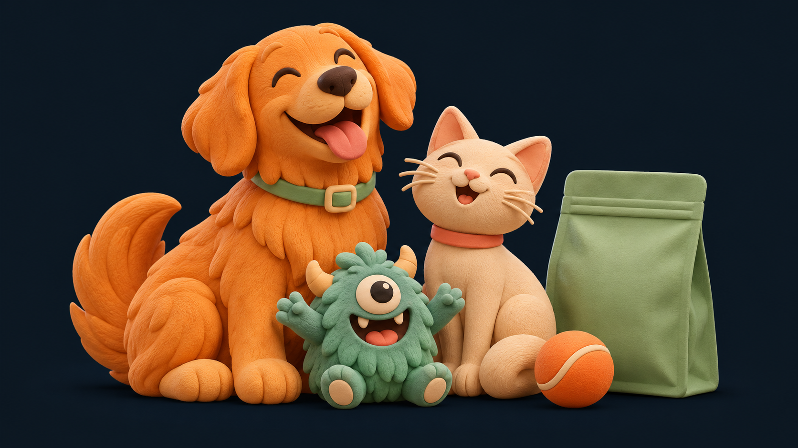
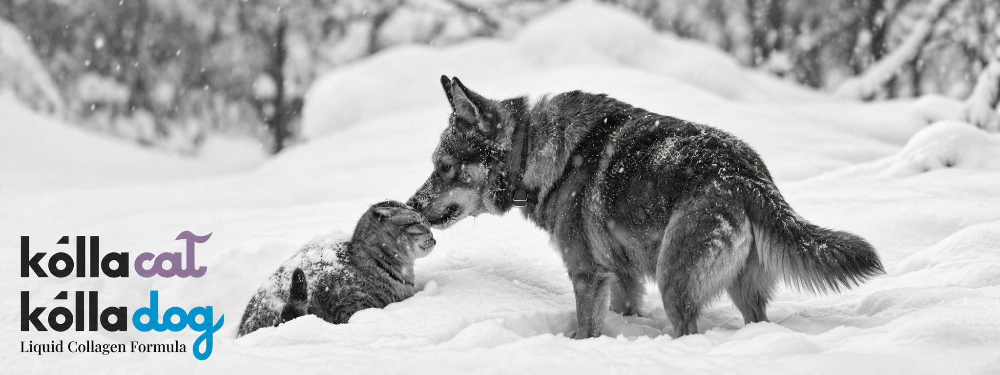
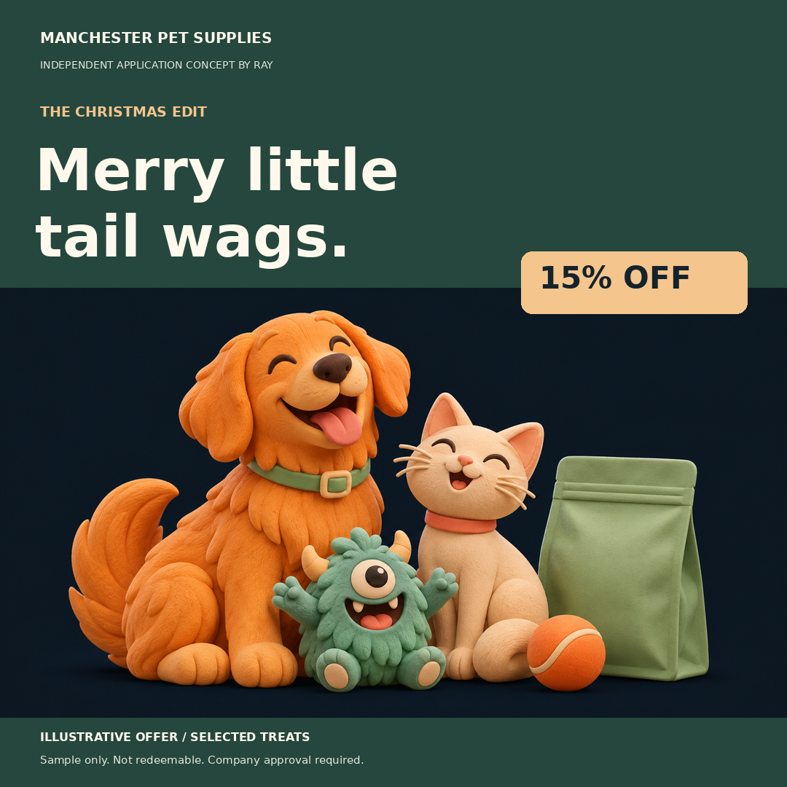

Website confidence
Website and digital marketing work at Physio Care, plus WordPress work for Rahil Communication, give me a practical foundation for content updates and troubleshooting.
Content + technical supportA personal application for Manchester Pet Supplies
Hi, I'm Ray. A hands-on marketing assistant with a technical mind, a creative eye and a love for getting the details right.


COMPANY BANNER STUDY
Real banners from Manchester's website, adapted to remove product packaging. A visual study in retaining a brand's character while simplifying the composition.
Wild Vibes · Product-free adaptationView original company website asset →
01 / 02Original banner artwork belongs to the respective brands. Product removal and motion are portfolio adaptations, not commissioned work.
Experience, skills and an interactive resume.
Seasonal concepts, banners and motion.
Available for in-person work in Brantford.
THE INTERACTIVE RESUME
Marketing support.
Creative execution.
A technical advantage.
Select a chapter to explore the work behind it.
PHYSIO CARE SERVICE
Website and digital marketing support: service content, SEO metadata, website functionality and booking access through Jane App.
Explore the website →No skill percentages. Just how I put each tool to work.
Adapt promotional content into coordinated banners, social posts and supporting materials.
A clear path from the Marketing Manager's brief to a finished asset.
Confirm the audience, format, deadline, approved product range and the message that matters most.
Create the assets, keep product information together and use consistent file names and reusable layouts.
Review product names, sizes, approved prices, spelling and formatting before the team signs off.
Publish approved content, track the work and use feedback to improve the next round.
30 SECOND OVERVIEW
Marketing Assistant candidate · Hamilton, ON · In-person availability in Brantford
Website and marketing support, promotional materials, product content, social media and coordination, supported by approximately 18 years of software development experience.
Physio Care Service: website and digital marketing support.
Rahil Communication: WordPress website project.
Canva, Excel, Outlook, WordPress and social media.
Bachelor of Computer Applications · VNSGU · 2005.
Four seasonal campaign concepts, eight graphics, a campaign brief and a 12-second reel, created for this application.
View work samples →Explore the evidence, then download the PDF. Employment dates can be added once confirmed.
01 / THE FIT
I'm applying to support the Marketing Manager: turn the brief into assets, keep information accurate and help the team deliver.
Website and digital marketing work at Physio Care, plus WordPress work for Rahil Communication, give me a practical foundation for content updates and troubleshooting.
Content + technical supportI bring experience with promotional materials and social content. Below, I've made a new seasonal campaign set to show how I can adapt one idea across formats.
Canva + social mediaI have handled product information, campaign support, event coordination and team communication. Excel, Outlook and website tools support the day-to-day work.
Organized + adaptableThe advertised role includes promotional assets, website and product updates, social media and event support.
02 / THE CAMPAIGN STUDIO
Four original creative directions for a pet specialty retail audience. Switch seasons to see the visual system change.
Application work samples. These are proposed concepts, not Manchester promotions. All discounts are illustrative and need company approval. No offer is redeemable.
THE CHRISTMAS EDIT
A gift-ready collection of everyday favourites for the pets who make the season brighter.
SOCIAL POST

RETAILER EMAIL
Hello retail partners, bring a festive touch to your next display with a curated treat selection. This concept pairs seasonal artwork with clear product names, pack sizes and a simple approval process.
Before sending: confirm stock, pricing, approved creative, campaign dates and retailer eligibility.
Open the campaign brief →03 / PRODUCT CONTENT
Real catalogue references, organized into a sample content workflow. Availability and commercial terms must be confirmed with Manchester.
Showing all 3 catalogue examples
Fermented Cat Grass Beef Cat Treats · 60 g
Kelp Flakes for Cats · 72 g
Collagen for Dogs Liquid Formula v2.0 · 250 ml
This application portfolio contains two cat examples and one dog example.
04 / A LITTLE MOTION
A short silent motion graphic, created for this application. An example of how a campaign can move from static artwork to video.
05 / THE PERSON BEHIND THE WORK
I'm Mohammedrais Shaikh, also known as Ray. I bring roughly 18 years of software experience to practical marketing and website work.
Website and digital marketing support, service content, SEO metadata and booking access through Jane App.
Visit website →WordPress website work including service pages, contact forms, navigation, mobile layout and search metadata.
Visit website →Veer Narmad South Gujarat University, India · 2005
English · Hindi · Gujarati · Punjabi
06 / HOW I'D GET STARTED
A proposed first-month approach, aligned with the Marketing Manager's priorities.
Review brand guidelines, existing templates, product data, approval steps and the monthly marketing calendar.
Help prepare sell sheets, update website content and organize assets while checking names, sizes and approved prices.
Suggest reusable layouts and simple tracking sheets, then refine them with feedback from the team.
LET'S MAKE THE NEXT THING HAPPEN
Available for in-person work in Brantford.
Based in Hamilton, Ontario.